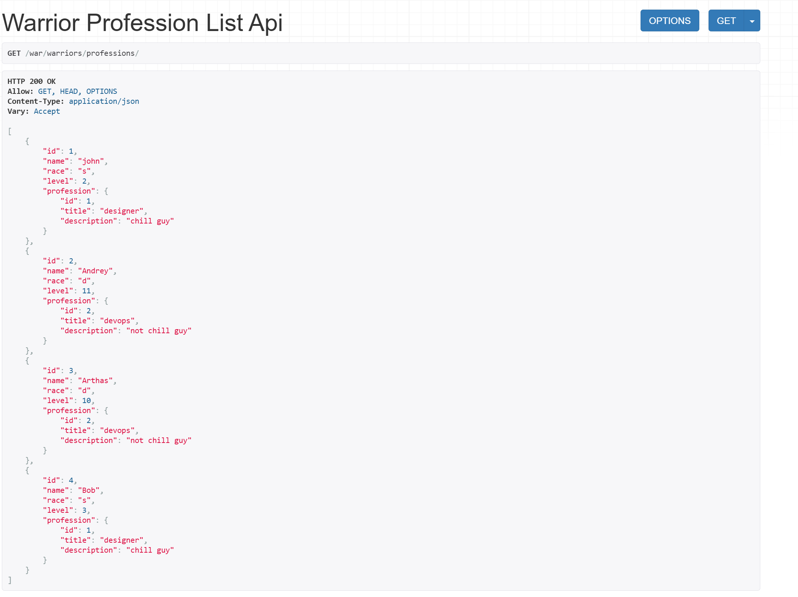
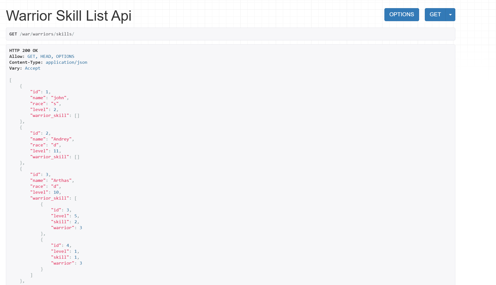
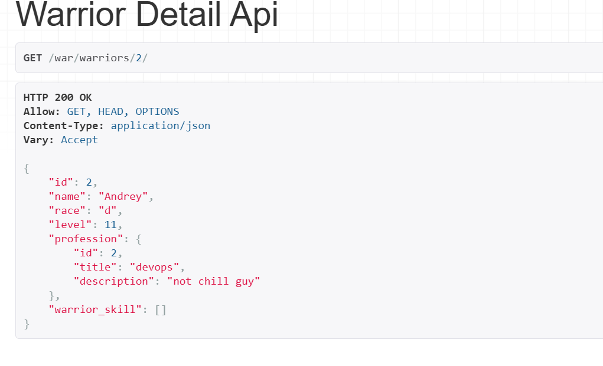
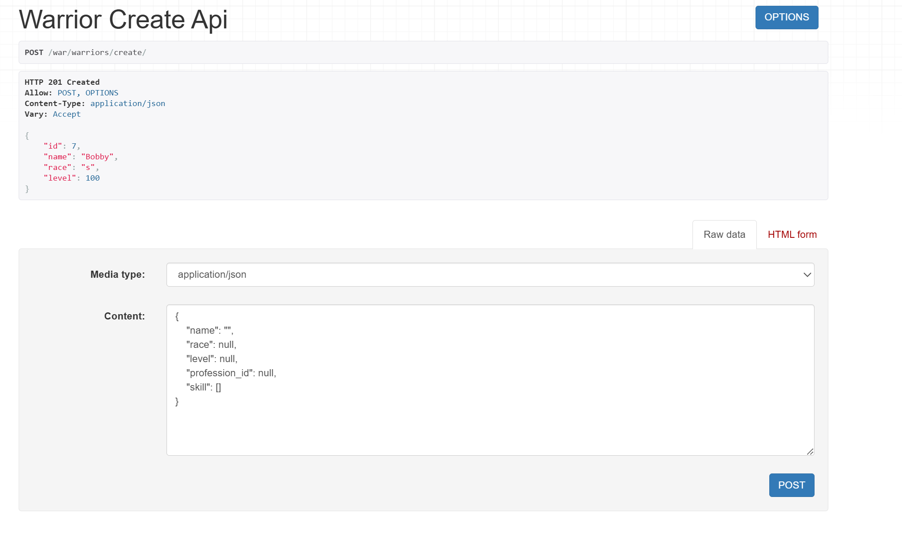
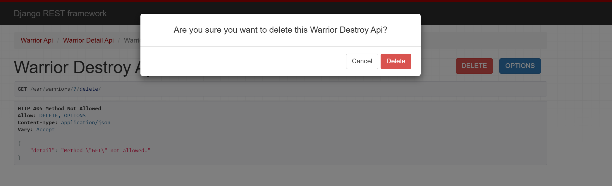
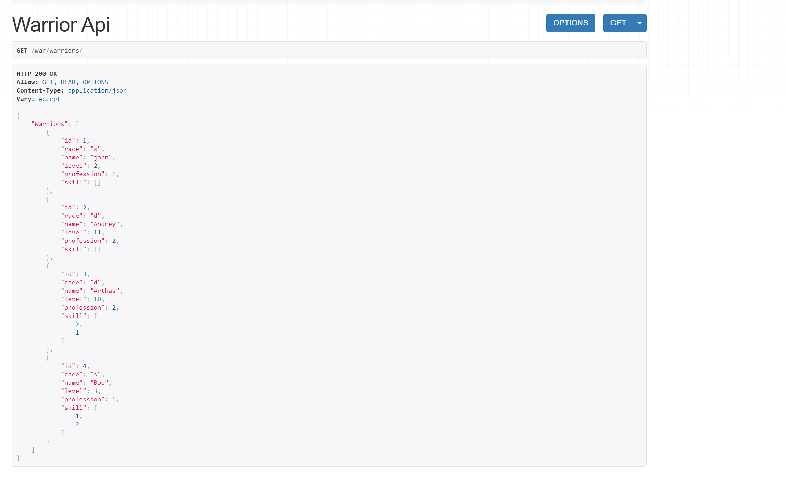
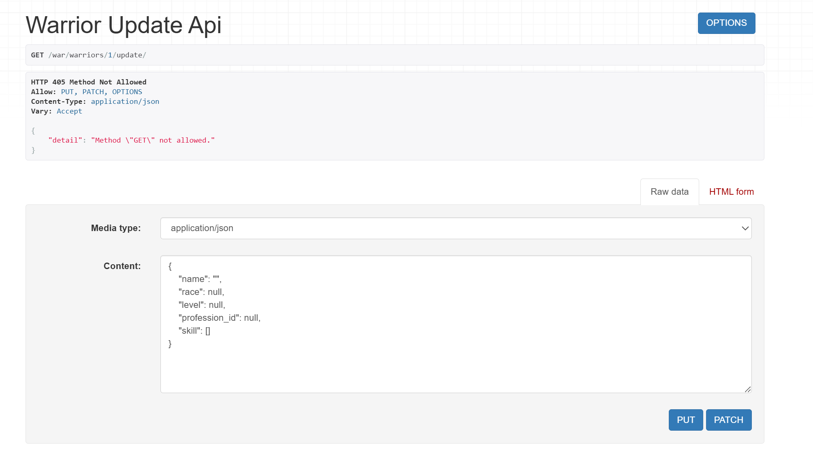

Практическое задание №2¶
Задание:¶
Реализовать ендпоинты: * Вывод полной информации о всех войнах и их профессиях (в одном запросе). * Вывод полной информации о всех войнах и их скиллах (в одном запросе). * Вывод полной информации о войне (по id), его профессиях и скилах. * Удаление война по id. * Редактирование информации о войне.
Выполнение¶
Пропишем классы:¶
Для вывода информации о всех войнах и их профессиях:¶
В serializers.py:
class WarriorProfessionSerializer(serializers.ModelSerializer):
profession = ProfessionSerializer(read_only=True)
class Meta:
model = Warrior
fields = ['id', 'name', 'race', 'level', 'profession']
В views.py:
class WarriorProfessionListAPIView(generics.ListAPIView):
serializer_class = WarriorProfessionSerializer
queryset = Warrior.objects.all().select_related("profession")
Для вывода полной информации о всех войнах и их скиллах:¶
В serializers.py:
class WarriorSkillSerializer(serializers.ModelSerializer):
warrior_skill = SkillOfWarriorSerializer(many=True, read_only=True)
class Meta:
model = Warrior
fields = ['id', 'name', 'race', 'level', 'warrior_skill']
В views.py:
class WarriorSkillListAPIView(generics.ListAPIView):
serializer_class = WarriorSkillSerializer
queryset = Warrior.objects.all().prefetch_related("warrior_skill__skill")
Для вывода полной информации о войне (по id), его профессиях и скиллах:¶
В serializers.py:
class WarriorFullSerializer(serializers.ModelSerializer):
profession = ProfessionSerializer(read_only=True)
warrior_skill = SkillOfWarriorSerializer(many=True, read_only=True)
class Meta:
model = Warrior
fields = ['id', 'name', 'race', 'level', 'profession', 'warrior_skill']
В views.py:
class WarriorDetailAPIView(generics.RetrieveAPIView):
serializer_class = WarriorFullSerializer
queryset = Warrior.objects.all().select_related("profession").prefetch_related("warrior_skill__skill")
lookup_field = 'id'
Для удаления воина по id:¶
Пропишем во views.py:
class WarriorDestroyAPIView(generics.DestroyAPIView):
queryset = Warrior.objects.all()
lookup_field = 'id'
Для редактирования информации о войне:¶
В serializers.py:
class WarriorCreateUpdateSerializer(serializers.ModelSerializer):
profession_id = serializers.IntegerField(write_only=True, required=False)
skill = WarriorSkillInputSerializer(many=True, write_only=True, required=False)
class Meta:
model = Warrior
fields = ['id', 'name', 'race', 'level', 'profession_id', 'skill']
def create(self, validated_data):
skill_data = validated_data.pop('skill', [])
profession_id = validated_data.pop('profession_id', None)
warrior = Warrior.objects.create(**validated_data)
if profession_id:
warrior.profession_id = profession_id
warrior.save()
# создаём записи в SkillOfWarrior
for item in skill_data:
SkillOfWarrior.objects.create(
warrior=warrior,
skill_id=item['id'],
level=item['level']
)
return warrior
def update(self, instance, validated_data):
skill_data = validated_data.pop('skill', None)
profession_id = validated_data.pop('profession_id', None)
for attr, value in validated_data.items():
setattr(instance, attr, value)
if profession_id is not None:
instance.profession_id = profession_id
instance.save()
if skill_data is not None:
# полностью пересоздаём набор скиллов
SkillOfWarrior.objects.filter(warrior=instance).delete()
for item in skill_data:
SkillOfWarrior.objects.create(
warrior=instance,
skill_id=item['id'],
level=item['level']
)
return instance
В views.py:
class WarriorUpdateAPIView(generics.UpdateAPIView):
serializer_class = WarriorCreateUpdateSerializer
queryset = Warrior.objects.all()
lookup_field = 'id'
class WarriorCreateAPIView(generics.CreateAPIView):
serializer_class = WarriorCreateUpdateSerializer
queryset = Warrior.objects.all()
Добавим пути для ендпоинтов:¶
urlpatterns = [
path('warriors/', WarriorAPIView.as_view()),
path('warriors/create/', WarriorCreateAPIView.as_view()),
path('warriors/list/', WarriorListAPIView.as_view()),
path('warriors/professions/', WarriorProfessionListAPIView.as_view()),
path('warriors/skills/', WarriorSkillListAPIView.as_view()),
path('warriors/<int:id>/', WarriorDetailAPIView.as_view()),
path('warriors/<int:id>/delete/', WarriorDestroyAPIView.as_view()),
path('warriors/<int:id>/update/', WarriorUpdateAPIView.as_view()),
path('professions/generic_create/', ProfessionCreateAPIView.as_view()),
path('skills/', SkillAPIView.as_view()),
path('skills/generic_create/', SkillCreateAPIView.as_view()),
]
Демонстрация работы:¶
1. Вывод полной информации о всех войнах и их профессиях (в одном запросе).¶

2. Вывод полной информации о всех войнах и их скиллах (в одном запросе).¶

3. Вывод полной информации о войне (по id), его профессиях и скилах.¶

4. Удаление война по id.¶
Создадим воина по имени Bobby:

А теперь убьем его:

И вуаля, воина с id 7 больше нет в списке:

5. Редактирование информации о войне.¶
Редактирование также находится по одноименному пути:
